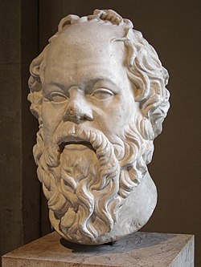
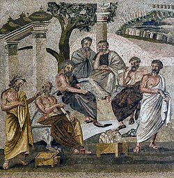
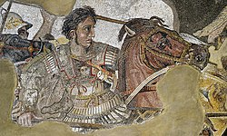

Ancient Greece
Birthplace of Democracy, Philosophy & the Olympic Games
800 BC – 146 BC · Classical Civilization
The Great City-States

Athens
Democracy · Philosophy · Art
The intellectual center of the ancient world. Birthplace of democracy under Cleisthenes (508 BC), home to Socrates, Plato, and Aristotle. The Acropolis and Parthenon stand as icons of its golden age under Pericles.
Sparta
Military Excellence · Discipline
The warrior state. Every male citizen underwent the agoge — a brutal military training from age 7. Spartan women had more rights than any other Greek city-state. The 300 at Thermopylae defined their legacy.
Corinth
Trade · Commerce · Architecture
The most prosperous city-state due to its strategic location on the isthmus. Famous for the Corinthian order of architecture, bronze craftsmanship, and controlling trade between the Aegean and Adriatic Seas.
Thebes
Sacred Band · Military Power
Home of the legendary Sacred Band — 150 paired warriors whose bonds made them unbeatable. Under Epaminondas, Thebes defeated Sparta at Leuctra (371 BC), ending 200 years of Spartan dominance.

Macedon
Conquest · Hellenism
Not considered truly "Greek" by classical city-states, yet King Philip II and his son Alexander the Great united and then exceeded all of Greece, spreading Hellenistic culture from Egypt to India.
Syracuse
Sicily · Science · Defense
The greatest Greek colony in the Western Mediterranean. Home of Archimedes, who designed remarkable war machines that held off Roman sieges. Its fall in 212 BC marked the decline of Greek independence.
The Great Philosophers

Socrates
470–399 BC
Father of Western philosophy. Developed the Socratic method — questioning assumptions to reveal truth. Condemned to death by Athens for "corrupting youth." Wrote nothing; known through Plato.

Plato
428–348 BC
Student of Socrates, teacher of Aristotle. Founded the Academy. His Republic describes the ideal state; the Theory of Forms posits an eternal realm of perfect ideas beyond the physical world.
Aristotle
384–322 BC
Tutor to Alexander the Great. Founded the Lyceum. Wrote on logic, biology, physics, ethics, politics, and art. His systematic approach to knowledge shaped European thought for 2,000 years.
Heraclitus
535–475 BC
"You cannot step in the same river twice." The philosopher of flux and fire. Believed in the unity of opposites — that change is the fundamental nature of reality.
Pythagoras
570–495 BC
Philosopher and mathematician who believed numbers were the essence of reality. His theorem (a²+b²=c²) remains foundational. Founded a mystical-mathematical brotherhood in Croton.
Epicurus
341–270 BC
Founded Epicureanism — the pursuit of pleasure (ataraxia) through simple living, friendship, and philosophical contemplation. Often misunderstood as hedonism; was actually about tranquility.
Timeline of Ancient Greece
776 BC
First Olympic Games
The first recorded Olympic Games held at Olympia in honor of Zeus. City-states declared truces during the games — a pan-Hellenic tradition that united Greece.
508 BC
Birth of Athenian Democracy
Cleisthenes reforms Athens into the world's first democracy. Citizens vote directly on laws and policies in the Assembly — a revolutionary political experiment.
480 BC
Battle of Thermopylae
300 Spartans under Leonidas hold the pass against Xerxes' vast Persian army for three days, sacrificing themselves to allow Greece to regroup and ultimately defeat Persia.
447 BC
Parthenon Construction Begins
Under Pericles and architects Ictinus and Callicrates, Athens builds the Parthenon — the pinnacle of Doric architecture dedicated to Athena Parthenos.

338 BC
Philip II Conquers Greece
Macedonia defeats the Greek city-states at the Battle of Chaeronea, ending the classical era of independent city-states. Philip's son Alexander will go further.
323 BC
Death of Alexander the Great
Alexander dies at 32 in Babylon, having conquered an empire stretching from Greece to India. The Hellenistic Age begins, spreading Greek culture across three continents.

146 BC
Rome Conquers Greece
Rome destroys Corinth and annexes Greece. Though conquered militarily, Greece "conquers" Rome culturally — Greek philosophy, art, and science become the foundation of Roman civilization.